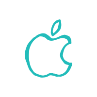
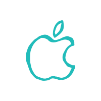
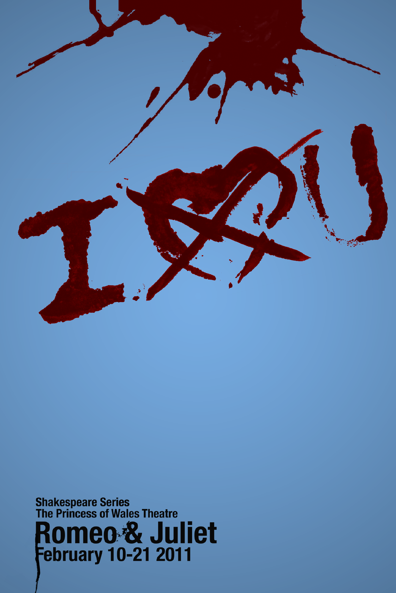
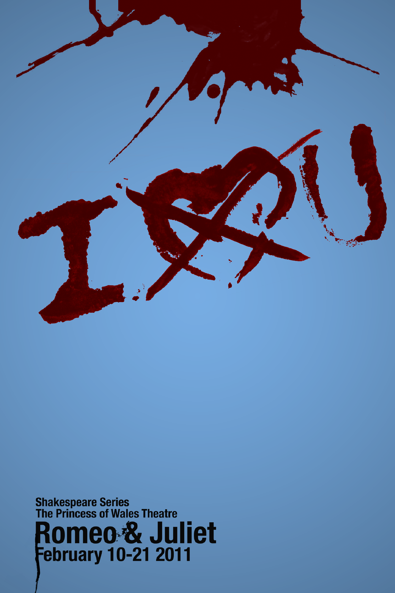

I am a graphic design student with experience in print design, web design, and a strength in web development. I was born and raised in Detroit, Michigan, but I have found my home in Cincinnati, Ohio. I'm almost always glued to my computer for either work or play, but I also love to spoil my cats, draw, and cook.


 



 
